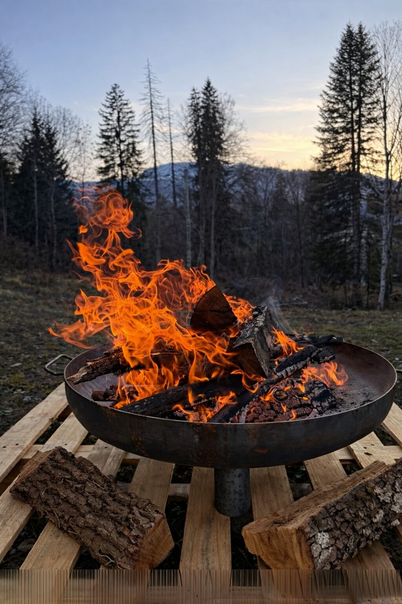

Forfaits Grand Massif 2026-2027 : tarifs et dates d'ouverture

Fin août, les mélèzes commencent à peine à jaunir au-dessus des Carroz — et pourtant, c'est déjà le bon moment pour caler son hiver. Les dates d'ouverture du Grand Massif et les tarifs des forfaits 2026-2027 sont publiés, et la fenêtre la plus intéressante de l'année pour un abonnement saison se referme le 30 septembre. Voici ce qu'il faut savoir avant de réserver.
Les dates d'ouverture, station par station
Le Grand Massif réunit cinq stations reliées — Flaine, Les Carroz, Morillon, Samoëns et Sixt — pour 265 km de pistes entre 720 et 2 500 m. Chacune ouvre à son rythme :
- Flaine : du 5 décembre 2026 au 18 avril 2027 (la plus longue saison, et la plus haute).
- Les Carroz et Samoëns : du 12 décembre 2026 au 11 avril 2027.
- Morillon : du 19 décembre 2026 au 4 avril 2027.
- Sixt : du 19 décembre 2026 au 7 mars 2027.
Concrètement, si vous visez un premier week-end de neige début décembre, c'est Flaine qui ouvre le bal — à 25 minutes de route des Carroz, ou skis aux pieds une fois la liaison ouverte.
Combien coûte un forfait en 2026-2027 ?
Trois formules couvrent l'essentiel des séjours :
- Forfait Grand Massif (les 5 stations) : 63,00 € la journée adulte (15-74 ans), 50,40 € en tarif réduit (8-14 ans). Le tarif est identique de 2 à 7 jours, consécutifs ou non, valables tout l'hiver 2026-2027. Une formule 4 heures existe à 56,70 €.
- Forfait Villages (Les Carroz, Morillon, Samoëns, Sixt, sans Flaine) : 58,50 € la journée adulte, 46,80 € en réduit. Un bon compromis si vous restez côté forêt.
- Forfait débutant Les Carroz : 28 € la journée adulte, 21 € en réduit. Il donne accès à deux allers-retours en télécabine de la Kédeuze, aux télésièges et téléskis des Crêtes et de Plein Soleil, et à la gratuité des téléskis Figaro et des Molliets — parfait pour une première semaine en famille.
Bon à savoir : le ski est gratuit pour les moins de 8 ans et les 75 ans et plus, sur présentation d'un justificatif en points de vente. Comptez 2 € pour le support mains libres rechargeable, non remboursable.
Abonnement saison : la fenêtre PREM'S se ferme le 30 septembre
C'est le vrai bon plan de la rentrée. L'abonnement saison Grand Massif donne un accès illimité aux cinq stations tout l'hiver, et son prix dépend de la date d'achat :
- Tarif PREM'S, jusqu'au 30 septembre 2026 : 658 € (26-74 ans), 439 € (8-25 ans), 59 € (moins de 8 ans et 75 ans et plus).
- Tarif PROMO, jusqu'au 15 novembre 2026 : 732 € et 488 €.
- Plein tarif ensuite : 1 316 € et 878 €.
Soit exactement la moitié du prix en achetant avant fin septembre. Il existe aussi une formule hiver + été à 748 € en PREM'S, qui inclut les remontées estivales — intéressante si vous revenez pour le Bike Park.
Pourquoi réserver son logement maintenant
Les semaines de Noël et de février partent tôt aux Carroz, et les appartements avec vraie terrasse restent rares. Le Lodge Le Chamois est un 83 m² pour 6 personnes, trois chambres, au 265 route de Flaine, à 3 minutes à pied du téléphérique des Carroz. Le stationnement se fait en parking privé couvert, équipé d'une prise de recharge Green'Up, et les skis passent la nuit dans un casier chauffé au rez-de-chaussée, chaussures sèches le lendemain matin.
Le soir, la terrasse plein sud de 45 m² prend tout son sens : bain nordique en bois (en option), brasero et vue sur les sapins enneigés. Pour l'accès, comptez 15 minutes depuis la sortie 19 de l'A40, 50 minutes depuis Genève, ou le Léman Express jusqu'à Cluses puis la navette « Les Carroz Flaine Express ».
Envie de séjourner au Lodge cet hiver ?
Appartement 4★ pour 6 personnes, terrasse plein sud et bain nordique, au centre des Carroz d'Arâches. Clémentine, notre conciergerie, s'occupe du reste.
Voir les disponibilités